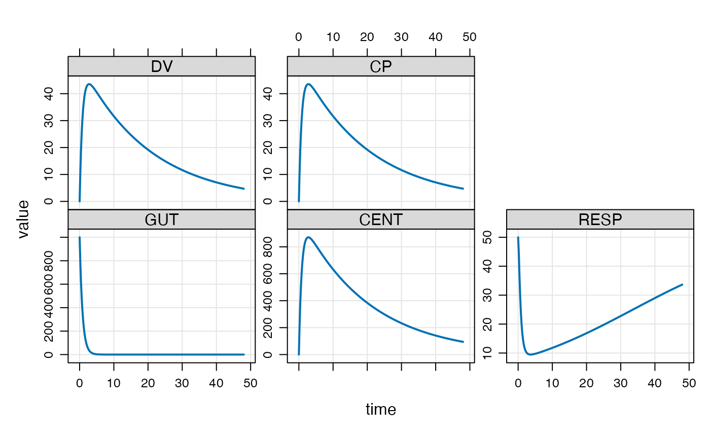

Generate a quick plot of simulated data
# S4 method for mrgsims,missing plot(x, limit = 16, ...) # S4 method for mrgsims,formula plot( x, y, limit = 16, show.grid = TRUE, outer = TRUE, type = "l", lwd = 2, ylab = "value", groups = ID, scales = list(y = list(relation = "free")), logy = FALSE, logbr = 1, ... ) # S4 method for mrgsims,character plot(x, y, ...)
Arguments
| x | mrgsims object |
|---|---|
| limit | limit the the number of panels to create |
| ... | other arguments passed to xyplot |
| y | formula used for plotting |
| show.grid | logical indicating whether or not to draw panel.grid |
| outer | passed to xyplot |
| type | passed to xyplot |
| lwd | passed to xyplot |
| ylab | passed to xyplot |
| groups | passed to xyplot |
| scales | passed to xyplot |
| logy | plot the y variables on log scale |
| logbr | log scale breaks indicator; use |
Examples
